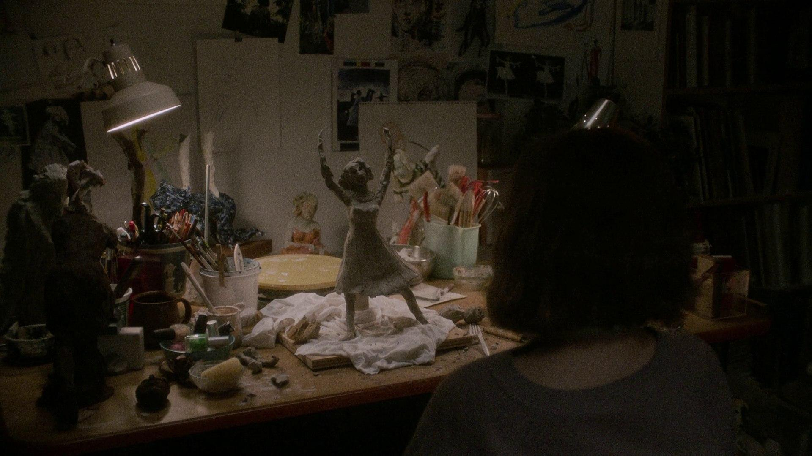

쇼잉업, Showing Up
2022 | 드라마 | 감독 켈리 레이카트 | 출연 미셸 윌리엄스, 홍 차우

NOTE
리지의 일상을 가만히 들여다보며 창작자의 삶을 잠시동안 체험했다. 작업에 몰두하고 싶은 그녀의 마음도, 온갖 장애물들이 들이닥칠 때 그녀의 복잡한 심정과 분노도, 모두 알 것만 같았다.
가마에서 꺼내진 본인의 조각품을 이리저리 돌려보면서 “너무 예쁘지 않나요” 라고 말하는 그녀의 표정이 잊혀지지가 않는데, 아마도 난 한 번도 내가 만든 무엇을 저토록 사랑해본 적이 없었던 것 같아서가 아닐까.
한쪽 면이 새카맣게 그을린 조각품을 보고 크게 실망하지만 이내 받아드리는 리지를 보며, 불가항력적인 외부의 개입 마저도 작품이라는 사실을 다시금 되새겨 본다.
‘우리는 때로 주변의 잡념과 화해하기도 한다. 때로는 그런 잡념들이 우리의 상상력에 예기치 못한 풍성함을 더해주기도 한다.’
Quote
영화 <쇼잉업>은 마치 감탄하는 그림 앞에 선 사람처럼 세심하게 작품을 바라봅니다. 하지만 완성된 작품을 보여주는 대신, 작품이 만들어지는 과정을 보여줍니다. 차고 작업실에서 흙을 깎아내는 예술가의 모습을 길고 느린 템포로 담아냅니다. 그녀는 말라붙은 조각상의 팔을 부러뜨리고는 고통에 얼굴을 찡그리며 “미안해"라고 속삭인 후 새 팔을 만듭니다. 영화 상영 시간 동안 그녀가 사과하는 장면은 이때가 유일합니다. - 영화평론가 ‘사라 웰치 라슨’의 리뷰 중에서
(…) 이 모든 여정을 함께 했던 비둘기가 타인들의 손에 의해서 이 이야기의 무대를 벗어나게 되는데, 그게 뭔가 사건이라고 하기엔 작지만 하나의 사건이, 삶의 마디 하나가 끝났다는 듯이 날아가고. 이 영화의 에필로그는 비둘기의 시건으로 바라본 것 같은 앵글로 리지와 조를 지긋이 담아낸다. -김혜리의 필름클럽 <쇼잉업> 에피소드 중에서